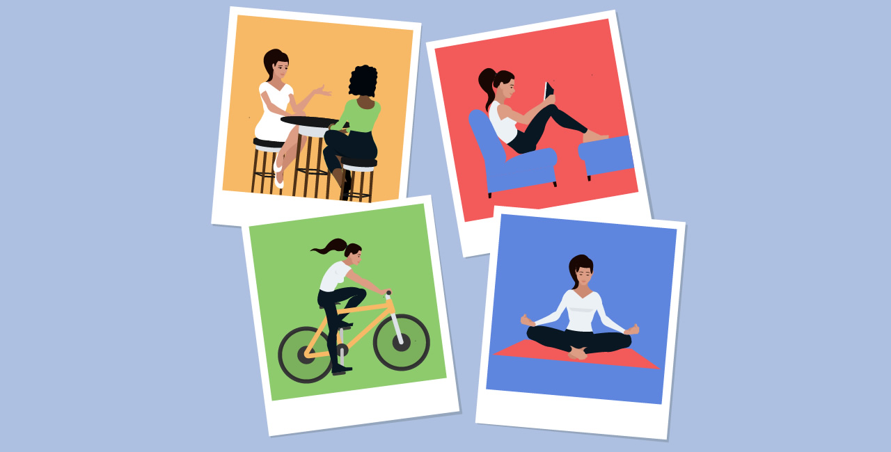

Saúde e bem-estar
Saúde é definida como um estado de completo bem-estar físico, mental e social e não somente ausência de afecções e enfermidades, enquanto bem-estar é a medida que um indivíduo ou grupo é capaz, por um lado, de realizar aspirações e satisfazer necessidades

O SUS e a saúde no Brasil
No Brasil, a saúde só passou a ser considerada um direito de todos e dever do Estado na Constituição de 1988. Em 1990, o Congresso Nacional aprovou a Lei Orgânica da Saúde, que determinou os parâmetros de como deveria funcionar o Sistema Único de Saúde (SUS). O Brasil é o único país com mais de duzentos milhões de habitantes que oferece serviço de saúde gratuito a toda a sua população. Seu alcance vai desde grandes, médias e pequenas cidades, até populações ribeirinhas, indígenas e quilombolas, o que é impressionante em um país continental e multicultural como o nosso.
Aqui estão alguns aspectos importantes para cuidar de si mesmo:

- Alimentação saudável: Consumir uma dieta equilibrada, rica em frutas, vegetais, proteínas magras e grãos integrais, ajuda a manter a energia e a saúde.
- Exercício físico: A prática regular de atividades físicas, como caminhadas, corridas, yoga ou musculação, é essencial para fortalecer o corpo e melhorar o humor.
- Hidratação: Beber água suficiente ao longo do dia é vital para o funcionamento adequado do organismo.
- Sono adequado: Ter uma boa qualidade de sono é crucial para a recuperação do corpo e da mente. Tente manter uma rotina de sono regular.
- Saúde mental: Praticar técnicas de relaxamento, como meditação e respiração profunda, pode ajudar a reduzir o estresse e a ansiedade.
- Conexões sociais: Manter relacionamentos saudáveis e apoiar-se em amigos e familiares é importante para o bem-estar emocional.
- Cuidados médicos: Realizar check-ups regulares e seguir as orientações de profissionais de saúde contribui para a prevenção de doenças.